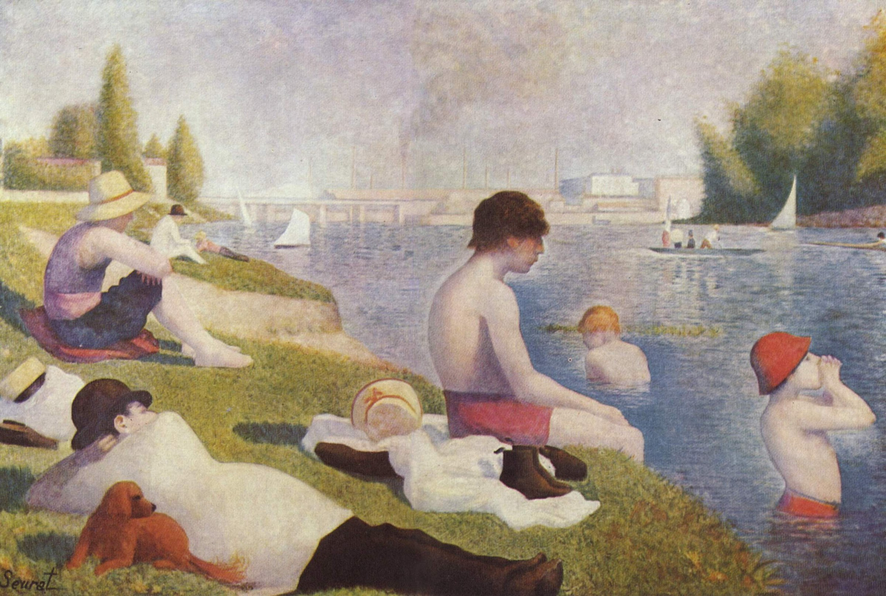

阿涅尔的浴场 Bathers at Asnières
修拉 · 1884年 · 伦敦国家美术馆
Georges Seurat · 1884 · The National Gallery, London
图片：Wikimedia Commons，公有领域 / Image: Wikimedia Commons, public domain

发现 · Discover
塞纳河边 By the Seine
几个男人和男孩，在巴黎西北部的工业郊区阿涅尔的塞纳河岸边休息。
Several men and boys relax on the banks of the Seine at Asnières, an industrial suburb north-west of Paris.
像雕塑一样 Like sculptures
他们都是侧面，像雕塑一样一动不动。修拉在美术学院学过临摹古典雕塑，几个人的姿势就反映了这一点。
Shown in profile, they are as still as sculptures. Seurat had learned to draw from classical sculpture at art school, and several of the poses reflect this.
各自的思绪 Lost in thought
他们各自沉浸在自己的思绪里，既不互相交流，也不看向我们。
Each seems absorbed in his own thoughts, engaging neither with one another nor with us.
远处的烟囱 The chimneys
远处是克利希的煤气厂和工厂的烟囱。画中有些人，可能就在那里工作。
In the distance are the chimneys of the gas plant and factories at Clichy, where some of these men may have worked.
两座桥 Two bridges
背景里，一座铁路桥挡住了另一座平行的公路桥。
In the background, a railway bridge partly hides a parallel road bridge.
后来加的小点 Dots added later
大约1886年，修拉发明了用对比色小点作画的技法，之后又回来修改了这幅画，比如右边男孩的帽子。
Around 1886, after inventing his technique of dots of contrasting colour, Seurat returned to this painting and reworked parts of it, such as the hat of the boy on the right.
故事 · The story
ACT I 第一幕 · 不到25岁 Not yet 25
这是修拉的第一幅大型作品，画的时候他还不到25岁。他想用这幅巨大的画，在1884年春天的官方沙龙上一鸣惊人。
This was Seurat's first major composition, painted before he turned 25. He meant this huge canvas to make his mark at the official Salon in spring 1884.
1884年 · 伦敦国家美术馆 / 1884 · The National Gallery, London
ACT II 第二幕 · 被拒绝 Rejected
沙龙拒绝了它。修拉把它送到了新成立的独立艺术家沙龙展出。
The Salon rejected it. Seurat showed it instead at the newly formed Salon des Artistes Indépendants.
1884年 · 伦敦国家美术馆 / 1884 · The National Gallery, London
ACT III 第三幕 · 来到伦敦 In London
1924年，伦敦国家美术馆用考陶尔德基金买下了这幅画。今天，它在伦敦国家美术馆展出。
In 1924, the National Gallery bought the painting with the Courtauld Fund. Today it is on display at the National Gallery, London.
1884年 · 伦敦国家美术馆 / 1884 · The National Gallery, London
好像时间停住了。 As if time had stood still.
作品档案 · Artwork record
| 画家（生卒年） · Artist (dates) | 乔治·修拉（1859–1891） / Georges Seurat (1859–1891) |
|---|---|
| 画名 · Title | 阿涅尔的浴场 / Bathers at Asnières |
| 年份 · Date | 1884年 / 1884 |
| 材质 · Medium | 布面油画 / Oil on canvas |
| 尺寸 · Dimensions | 201 × 300 cm |
| 收藏地 · Collection | 伦敦国家美术馆，44号展厅 / The National Gallery, London, Room 44 |
| 来源说明 · Credit line | 1924年用考陶尔德基金购入（编号 NG3908） / Bought, Courtauld Fund, 1924 (NG3908) |
关于画家 · About the artist
乔治·修拉（1859–1891），法国画家，生于巴黎，在巴黎美术学院接受过传统训练。他发明了用对比色小点作画的技法，后来被称为点彩派。他31岁就去世了。
Georges Seurat (1859–1891) was a French painter, born in Paris and trained at the École des Beaux-Arts. He developed a technique of painting in dots of contrasting colour, later known as pointillism. He died aged 31.
更多修拉的画 · More by Georges Seurat